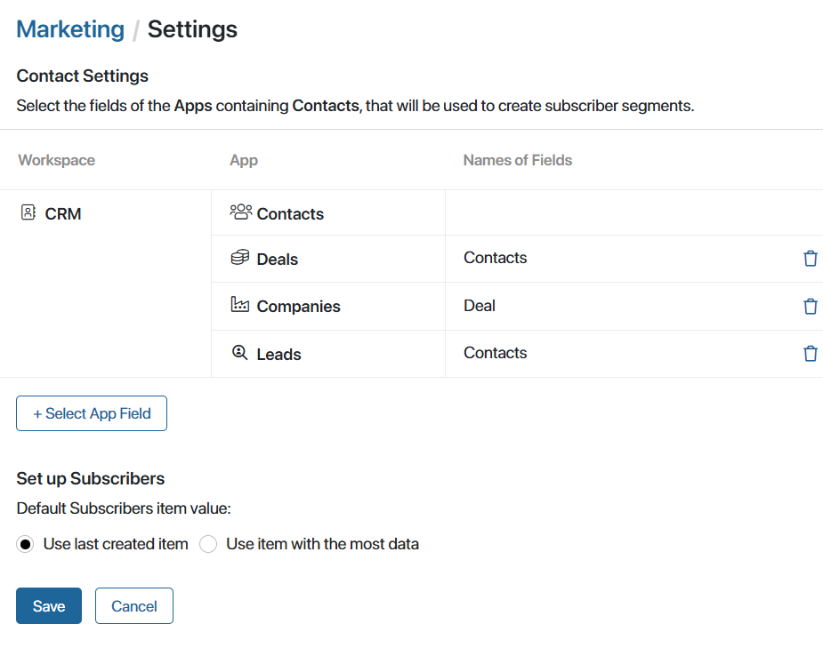
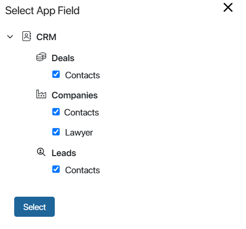

In the Marketing workspace settings, you can change the parameters by which segments of subscriber emails are created, i.e., customers from the Contacts app who have agreed to receive newsletters.
A contact whose page contains an email address and preference categories—subjects on which the customer wants to receive newsletters—becomes a subscriber. If several contacts have the same email, the Subscribers app displays the most recently created contact by default. On the workspace settings page, you can change this rule, and then the contact with the most data on their page will become a subscriber.
The workspace generates segments of subscriber emails from the total subscriber base to whom emails are sent. If subscribers are selected using a filter when creating a segment, an app is selected in its settings and the fields of this app related to contacts are used. By default, the Contacts app and the Contacts system fields of the Leads, Deals, and Companies apps are applied for selection. Similar fields can also be added to custom forms of any app. They can store customer data that can be included in segments for email campaigns.
начало внимание
Only users included in the Administrators group can configure the workspace.
конец внимание
Follow the steps below to change the settings:
- To the right of the Marketing workspace name, click the gear icon and select Settings.
- On the opened page, change the settings:

- Contact Settings. Select the app fields that can be used to create a segment of subscriber emails. By default, the system apps of the CRM workspace and all their fields referring to the Contacts app are displayed. Also, the Contacts app is always available to create a selection of all existing contacts.
начало внимание
When creating a segment, the Marketing workspace settings apply only to the Filter option and do not apply to selecting subscribers using an EQL query.
конец внимание
You can add contact-related fields from any app. To do this, click +Select App Fields and check the required fields in the opened window.

For example, if you have the Lawyer field in the Companies app referring to the Contacts app, you can check this field. In this case, customers from the Contacts and Lawyer fields will be included when creating the segment of subscriber emails by company.
- Set Up Subscribers. Define which contact will become a subscriber if the same email is specified in several contacts:
- Use last created item. The subscriber list will include the contact that was created later than the others.
- Use item with the most data. The system will check which contact’s page has more fields filled in. If the number of fields is the same, the subscriber will be the one who has more characters in the Name field.
- Save the settings.